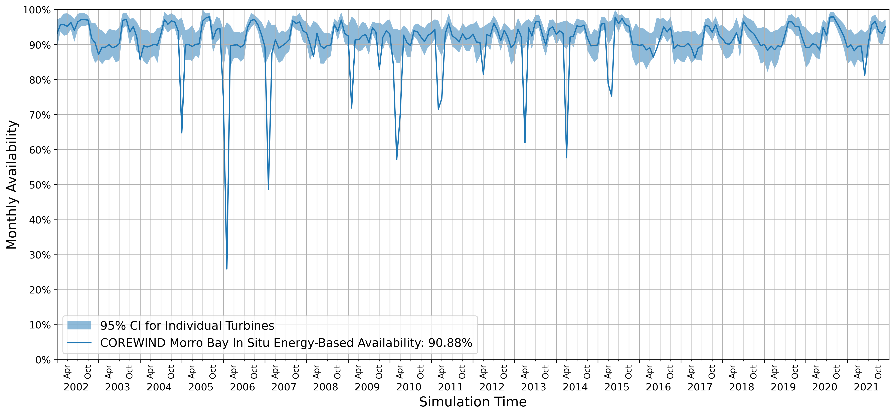

Demonstration of the Available Metrics#

For a complete list of metrics and their documentation, please see the API Metrics documentation.
This demonstration will rely on the results produced in the "How To" notebook and serves as an extension of the API documentation to show what the results will look like depending on what inputs are provided.
A Jupyter notebook of this tutorial can be run from
examples/metrics_demonstration.ipynb locally, or through
binder.
from pprint import pprint
from functools import partial
import pandas as pd
from pandas.io.formats.style import Styler
from wombat.core import Simulation, Metrics
from wombat.utilities import plot
# Clean up the aesthetics for the pandas outputs
pd.set_option("display.max_rows", 30)
pd.set_option("display.max_columns", 10)
style = partial(
Styler,
table_attributes='style="font-size: 14px; grid-column-count: 6"',
precision=2,
thousands=",",
)
Table of Contents#
Below is a list of top-level sections to demonstrate how to use WOMBAT's Metrics
class methods and an explanation of each individual metric.
If you don't see a metric or result computation that is core to your work, please submit an issue with details on what the metric is, and how it should be computed.
Setup: Running a simulation to gather the results
Common Parameters: Explanation of frequently used parameter settings
Availability: Time-based and energy-based availability
Capacity Factor: Gross and net capacity factor
Task Completion Rate: Task completion metrics
Equipment Costs: Cost breakdowns by servicing equipment
Service Equipment Utilization Rate: Utilization of servicing equipment
Vessel-Crew Hours at Sea: Number of crew or vessel hours spent at sea
Number of Tows: Number of tows breakdowns
Labor Costs: Breakdown of labor costs
Equipment and Labor Costs: Combined servicing equipment and labor cost breakdown
Emissions: Emissions of servicing equipment based on activity
Component Costs: Materials costs
Fixed Cost Impacts: Total fixed costs
OpEx: Project OpEx
Process Times: Timing of various stages of repair and maintenance
Power Production: Potential and actually produced power
Net Present Value: Project NPV calculator
Setup#
The simulations from the How To notebook are going to be rerun as it is not recommended to create a Metrics class from scratch due to the large number of inputs that are required, and the initialization is provided in the simulation API's run method.
To simplify this process, a feature has been added to save the simulation outputs required to generate the Metrics inputs and a method to reload those outputs as inputs.
sim = Simulation("COREWIND", "morro_bay_in_situ.yaml")
# Both of these parameters are True by default for convenience
sim.run(create_metrics=True, save_metrics_inputs=True)
# Load the metrics data
fpath = sim.env.metrics_input_fname.parent
fname = sim.env.metrics_input_fname.name
metrics = Metrics.from_simulation_outputs(fpath, fname)
# Delete the log files now that they're loaded in
sim.env.cleanup_log_files()
# Alternatively, in this case because the simulation was run, we can use the
# following for convenience convenience only
metrics = sim.metrics
Common Parameter Explanations#
Before diving into each and every metric, and how they can be customized, it is worth noting some of the most common parameters used throughout, and their meanings to reduce redundancy. The varying output forms are demonstrated in the availability section below.
frequency#
- project
Computed across the whole simulation, with the resulting
DataFramehaving an empty index.- annual
Summary of each year in the simulation, with the resulting
DataFramehaving "year" as the index.- monthly
Summary of each month of the year, aggregated across years, with the resulting
DataFramehaving "month" as the index.- month-year
computed on a month-by-year basis, producing the results for every month of the simulation, with the resulting
DataFramehaving "year" and "month" as the index.
by#
- windfarm
Aggregated across all turbines, with the resulting
DataFramehaving only "windfarm" as a column- turbine
Computed for each turbine, with the resulting
DataFramehaving a column for each turbine
Availability#
There are two methods to produce availability, which have their own function calls:
energy: actual power produced divided by potential power produced
time: The ratio of all non-zero hours to all hours in the simulation, or the proportion of the simulation where turbines are operating
Here, we will go through the various input definitions to get time-based availability data as both methods use the same inputs, and provide outputs in the same format.
Inputs:
frequency, as explained above options: "project", "annual", "monthly", and "month-year"by, as explained above options: "windfarm" and "turbine"
Below is a demonstration of the variations on frequency and by for
time_based_availability.
style(metrics.time_based_availability(frequency="project", by="windfarm"))
| windfarm | |
|---|---|
| 0 | 0.91 |
style(metrics.production_based_availability(frequency="project", by="windfarm"))
| windfarm | |
|---|---|
| 0 | 0.91 |
Note that in the two above examples, that the values are equal. This is due to the fact that the example simulation does not have any operating reduction applied to failures, unless it's a catastrophic failure, so there is no expected difference.
# Demonstrate the by turbine granularity
style(metrics.time_based_availability(frequency="project", by="turbine"))
| WTG_0000 | WTG_0001 | WTG_0002 | WTG_0003 | WTG_0004 | WTG_0005 | WTG_0006 | WTG_0007 | WTG_0008 | WTG_0009 | WTG_0100 | WTG_0101 | WTG_0102 | WTG_0103 | WTG_0104 | WTG_0105 | WTG_0106 | WTG_0107 | WTG_0108 | WTG_0109 | WTG_0200 | WTG_0201 | WTG_0202 | WTG_0203 | WTG_0204 | WTG_0205 | WTG_0206 | WTG_0207 | WTG_0208 | WTG_0209 | WTG_0300 | WTG_0301 | WTG_0302 | WTG_0303 | WTG_0304 | WTG_0305 | WTG_0306 | WTG_0307 | WTG_0308 | WTG_0309 | WTG_0400 | WTG_0401 | WTG_0402 | WTG_0403 | WTG_0404 | WTG_0405 | WTG_0406 | WTG_0407 | WTG_0408 | WTG_0409 | WTG_0500 | WTG_0501 | WTG_0502 | WTG_0503 | WTG_0504 | WTG_0505 | WTG_0506 | WTG_0507 | WTG_0508 | WTG_0509 | WTG_0600 | WTG_0601 | WTG_0602 | WTG_0603 | WTG_0604 | WTG_0605 | WTG_0606 | WTG_0607 | WTG_0608 | WTG_0609 | WTG_0700 | WTG_0701 | WTG_0702 | WTG_0703 | WTG_0704 | WTG_0705 | WTG_0706 | WTG_0707 | WTG_0708 | WTG_0709 | |
|---|---|---|---|---|---|---|---|---|---|---|---|---|---|---|---|---|---|---|---|---|---|---|---|---|---|---|---|---|---|---|---|---|---|---|---|---|---|---|---|---|---|---|---|---|---|---|---|---|---|---|---|---|---|---|---|---|---|---|---|---|---|---|---|---|---|---|---|---|---|---|---|---|---|---|---|---|---|---|---|---|
| 0 | 0.90 | 0.91 | 0.91 | 0.90 | 0.93 | 0.92 | 0.91 | 0.91 | 0.92 | 0.92 | 0.91 | 0.91 | 0.90 | 0.92 | 0.90 | 0.90 | 0.91 | 0.91 | 0.90 | 0.92 | 0.91 | 0.92 | 0.92 | 0.91 | 0.92 | 0.91 | 0.90 | 0.91 | 0.91 | 0.92 | 0.90 | 0.90 | 0.90 | 0.90 | 0.91 | 0.91 | 0.91 | 0.92 | 0.91 | 0.91 | 0.91 | 0.90 | 0.92 | 0.92 | 0.92 | 0.91 | 0.90 | 0.91 | 0.91 | 0.89 | 0.90 | 0.90 | 0.91 | 0.92 | 0.92 | 0.91 | 0.90 | 0.90 | 0.89 | 0.91 | 0.91 | 0.91 | 0.91 | 0.91 | 0.89 | 0.93 | 0.91 | 0.91 | 0.92 | 0.91 | 0.89 | 0.91 | 0.90 | 0.91 | 0.91 | 0.91 | 0.90 | 0.92 | 0.91 | 0.91 |
# Demonstrate the annualized outputs
style(metrics.time_based_availability(frequency="annual", by="windfarm"))
| windfarm | |
|---|---|
| year | |
| 2002 | 0.95 |
| 2003 | 0.92 |
| 2004 | 0.92 |
| 2005 | 0.91 |
| 2006 | 0.86 |
| 2007 | 0.89 |
| 2008 | 0.91 |
| 2009 | 0.91 |
| 2010 | 0.87 |
| 2011 | 0.89 |
| 2012 | 0.91 |
| 2013 | 0.92 |
| 2014 | 0.91 |
| 2015 | 0.92 |
| 2016 | 0.90 |
| 2017 | 0.91 |
| 2018 | 0.92 |
| 2019 | 0.92 |
| 2020 | 0.93 |
| 2021 | 0.91 |
# Demonstrate the month aggregations
style(metrics.time_based_availability(frequency="monthly", by="windfarm"))
| windfarm | |
|---|---|
| month | |
| 1 | 0.89 |
| 2 | 0.86 |
| 3 | 0.88 |
| 4 | 0.85 |
| 5 | 0.89 |
| 6 | 0.91 |
| 7 | 0.93 |
| 8 | 0.95 |
| 9 | 0.95 |
| 10 | 0.94 |
| 11 | 0.94 |
| 12 | 0.92 |
# Demonstrate the granular monthly reporting
style(metrics.time_based_availability(frequency="month-year", by="windfarm"))
| windfarm | ||
|---|---|---|
| year | month | |
| 2002 | 1 | 0.94 |
| 2 | 0.95 | |
| 3 | 0.97 | |
| 4 | 0.96 | |
| 5 | 0.96 | |
| 6 | 0.94 | |
| 7 | 0.97 | |
| 8 | 0.97 | |
| 9 | 0.97 | |
| 10 | 0.97 | |
| 11 | 0.91 | |
| 12 | 0.92 | |
| 2003 | 1 | 0.85 |
| 2 | 0.90 | |
| 3 | 0.89 | |
| 4 | 0.90 | |
| 5 | 0.89 | |
| 6 | 0.90 | |
| 7 | 0.92 | |
| 8 | 0.97 | |
| 9 | 0.97 | |
| 10 | 0.94 | |
| 11 | 0.96 | |
| 12 | 0.92 | |
| 2004 | 1 | 0.86 |
| 2 | 0.90 | |
| 3 | 0.89 | |
| 4 | 0.90 | |
| 5 | 0.90 | |
| 6 | 0.90 | |
| 7 | 0.93 | |
| 8 | 0.98 | |
| 9 | 0.96 | |
| 10 | 0.97 | |
| 11 | 0.96 | |
| 12 | 0.93 | |
| 2005 | 1 | 0.69 |
| 2 | 0.91 | |
| 3 | 0.90 | |
| 4 | 0.89 | |
| 5 | 0.90 | |
| 6 | 0.90 | |
| 7 | 0.97 | |
| 8 | 0.98 | |
| 9 | 0.98 | |
| 10 | 0.92 | |
| 11 | 0.95 | |
| 12 | 0.94 | |
| 2006 | 1 | 0.71 |
| 2 | 0.30 | |
| 3 | 0.90 | |
| 4 | 0.90 | |
| 5 | 0.90 | |
| 6 | 0.89 | |
| 7 | 0.90 | |
| 8 | 0.94 | |
| 9 | 0.97 | |
| 10 | 0.97 | |
| 11 | 0.96 | |
| 12 | 0.93 | |
| 2007 | 1 | 0.91 |
| 2 | 0.55 | |
| 3 | 0.88 | |
| 4 | 0.91 | |
| 5 | 0.89 | |
| 6 | 0.90 | |
| 7 | 0.91 | |
| 8 | 0.92 | |
| 9 | 0.96 | |
| 10 | 0.96 | |
| 11 | 0.97 | |
| 12 | 0.94 | |
| 2008 | 1 | 0.93 |
| 2 | 0.90 | |
| 3 | 0.84 | |
| 4 | 0.93 | |
| 5 | 0.90 | |
| 6 | 0.89 | |
| 7 | 0.90 | |
| 8 | 0.90 | |
| 9 | 0.95 | |
| 10 | 0.95 | |
| 11 | 0.96 | |
| 12 | 0.93 | |
| 2009 | 1 | 0.94 |
| 2 | 0.77 | |
| 3 | 0.91 | |
| 4 | 0.91 | |
| 5 | 0.93 | |
| 6 | 0.93 | |
| 7 | 0.91 | |
| 8 | 0.95 | |
| 9 | 0.94 | |
| 10 | 0.85 | |
| 11 | 0.92 | |
| 12 | 0.94 | |
| 2010 | 1 | 0.93 |
| 2 | 0.87 | |
| 3 | 0.56 | |
| 4 | 0.67 | |
| 5 | 0.93 | |
| 6 | 0.90 | |
| 7 | 0.90 | |
| 8 | 0.94 | |
| 9 | 0.94 | |
| 10 | 0.93 | |
| 11 | 0.91 | |
| 12 | 0.93 | |
| 2011 | 1 | 0.92 |
| 2 | 0.94 | |
| 3 | 0.72 | |
| 4 | 0.72 | |
| 5 | 0.93 | |
| 6 | 0.96 | |
| 7 | 0.93 | |
| 8 | 0.92 | |
| 9 | 0.91 | |
| 10 | 0.93 | |
| 11 | 0.91 | |
| 12 | 0.93 | |
| 2012 | 1 | 0.93 |
| 2 | 0.91 | |
| 3 | 0.91 | |
| 4 | 0.81 | |
| 5 | 0.93 | |
| 6 | 0.92 | |
| 7 | 0.96 | |
| 8 | 0.95 | |
| 9 | 0.91 | |
| 10 | 0.94 | |
| 11 | 0.93 | |
| 12 | 0.89 | |
| 2013 | 1 | 0.91 |
| 2 | 0.94 | |
| 3 | 0.92 | |
| 4 | 0.69 | |
| 5 | 0.95 | |
| 6 | 0.93 | |
| 7 | 0.96 | |
| 8 | 0.97 | |
| 9 | 0.93 | |
| 10 | 0.90 | |
| 11 | 0.95 | |
| 12 | 0.95 | |
| 2014 | 1 | 0.93 |
| 2 | 0.94 | |
| 3 | 0.93 | |
| 4 | 0.67 | |
| 5 | 0.91 | |
| 6 | 0.93 | |
| 7 | 0.96 | |
| 8 | 0.96 | |
| 9 | 0.96 | |
| 10 | 0.91 | |
| 11 | 0.90 | |
| 12 | 0.90 | |
| 2015 | 1 | 0.90 |
| 2 | 0.95 | |
| 3 | 0.96 | |
| 4 | 0.84 | |
| 5 | 0.73 | |
| 6 | 0.98 | |
| 7 | 0.96 | |
| 8 | 0.98 | |
| 9 | 0.96 | |
| 10 | 0.95 | |
| 11 | 0.90 | |
| 12 | 0.90 | |
| 2016 | 1 | 0.90 |
| 2 | 0.90 | |
| 3 | 0.89 | |
| 4 | 0.89 | |
| 5 | 0.80 | |
| 6 | 0.90 | |
| 7 | 0.90 | |
| 8 | 0.96 | |
| 9 | 0.94 | |
| 10 | 0.94 | |
| 11 | 0.89 | |
| 12 | 0.90 | |
| 2017 | 1 | 0.89 |
| 2 | 0.90 | |
| 3 | 0.90 | |
| 4 | 0.89 | |
| 5 | 0.85 | |
| 6 | 0.89 | |
| 7 | 0.90 | |
| 8 | 0.96 | |
| 9 | 0.96 | |
| 10 | 0.93 | |
| 11 | 0.96 | |
| 12 | 0.93 | |
| 2018 | 1 | 0.92 |
| 2 | 0.90 | |
| 3 | 0.90 | |
| 4 | 0.91 | |
| 5 | 0.90 | |
| 6 | 0.90 | |
| 7 | 0.96 | |
| 8 | 0.96 | |
| 9 | 0.95 | |
| 10 | 0.94 | |
| 11 | 0.93 | |
| 12 | 0.90 | |
| 2019 | 1 | 0.90 |
| 2 | 0.88 | |
| 3 | 0.90 | |
| 4 | 0.89 | |
| 5 | 0.90 | |
| 6 | 0.86 | |
| 7 | 0.94 | |
| 8 | 0.96 | |
| 9 | 0.96 | |
| 10 | 0.95 | |
| 11 | 0.96 | |
| 12 | 0.92 | |
| 2020 | 1 | 0.89 |
| 2 | 0.89 | |
| 3 | 0.90 | |
| 4 | 0.90 | |
| 5 | 0.86 | |
| 6 | 0.95 | |
| 7 | 0.94 | |
| 8 | 0.98 | |
| 9 | 0.98 | |
| 10 | 0.96 | |
| 11 | 0.95 | |
| 12 | 0.93 | |
| 2021 | 1 | 0.89 |
| 2 | 0.90 | |
| 3 | 0.88 | |
| 4 | 0.90 | |
| 5 | 0.90 | |
| 6 | 0.84 | |
| 7 | 0.90 | |
| 8 | 0.95 | |
| 9 | 0.97 | |
| 10 | 0.94 | |
| 11 | 0.93 | |
| 12 | 0.96 |
Plotting Availability#
As of v0.9, the ability to plot the wind farm and turbine availability has been enabled as an experimental feature. Please see the plotting API documentation for more details.
# Demonstrate the granular monthly reporting
plot.plot_farm_availability(sim=sim, which="energy", farm_95_CI=True)

Capacity Factor#
The capacity factor is the ratio of actual (net) or potential (gross) energy production
divided by the project's capacity. For further documentation, see the API docs here:
wombat.core.post_processor.Metrics.capacity_factor().
Inputs:
which"net": net capacity factor, actual production divided by the plant capacity
"gross": gross capacity factor, potential production divided by the plant capacity
frequency, as explained above, options: "project", "annual", "monthly", and "month-year"by, as explained above, options: "windfarm" and "turbine"
Example Usage:
net_cf = metrics.capacity_factor(which="net", frequency="project", by="windfarm").values[0][0]
gross_cf = metrics.capacity_factor(which="gross", frequency="project", by="windfarm").values[0][0]
print(f" Net capacity factor: {net_cf:.2%}")
print(f"Gross capacity factor: {gross_cf:.2%}")
Net capacity factor: 51.49%
Gross capacity factor: 55.59%
Task Completion Rate#
The task completion rate is the ratio of tasks completed aggregated to the desired
frequency. It is possible to have a >100% completion rate if all maintenance and
failure requests submitted in a time period were completed in addition to those that
went unfinished in prior time periods. For further documentation, see the API docs here:
wombat.core.post_processor.Metrics.task_completion_rate().
Inputs:
which"scheduled": scheduled maintenance only (classified as maintenance tasks in inputs)
"unscheduled": unscheduled maintenance only (classified as failure events in inputs)
"both": Combined completion rate for all tasks
frequency, as explained above, options: "project", "annual", "monthly", and "month-year"
Example Usage:
scheduled = metrics.task_completion_rate(which="scheduled", frequency="project").values[0][0]
unscheduled = metrics.task_completion_rate(which="unscheduled", frequency="project").values[0][0]
combined = metrics.task_completion_rate(which="both", frequency="project").values[0][0]
print(f" Scheduled Task Completion Rate: {scheduled:.2%}")
print(f"Unscheduled Task Completion Rate: {unscheduled:.2%}")
print(f" Overall Task Completion Rate: {combined:.2%}")
Scheduled Task Completion Rate: 96.52%
Unscheduled Task Completion Rate: 95.73%
Overall Task Completion Rate: 96.03%
Equipment Costs#
Sum of the costs associated with a simulation's servicing equipment, which excludes
materials, downtime, etc. For further documentation, see the API docs here:
wombat.core.post_processor.Metrics.equipment_costs().
Inputs:
frequency, as explained above, options: "project", "annual", "monthly", and "month-year"by_equipmentTrue: Aggregates all equipment into a single costFalse: Computes for each unit of servicing equipment
Example Usage:
# Project total at the whole wind farm level
style(metrics.equipment_costs(frequency="project", by_equipment=False))
| equipment_cost | |
|---|---|
| 0 | 2,343,067,603.30 |
# Project totals at servicing equipment level
style(metrics.equipment_costs(frequency="project", by_equipment=True))
| Anchor Handling Tug | Cable Laying Vessel | Crew Transfer Vessel 1 | Crew Transfer Vessel 2 | Crew Transfer Vessel 3 | Crew Transfer Vessel 4 | Crew Transfer Vessel 5 | Crew Transfer Vessel 6 | Crew Transfer Vessel 7 | Diving Support Vessel | Heavy Lift Vessel | |
|---|---|---|---|---|---|---|---|---|---|---|---|
| 0 | 128,598,611.96 | 147,096,378.95 | 25,563,166.94 | 25,563,203.53 | 25,563,214.54 | 25,563,194.51 | 25,563,175.63 | 25,563,170.44 | 25,563,179.56 | 146,620,281.87 | 1,741,810,025.38 |
Service Equipment Utilization Rate#
Ratio of days when the servicing equipment is in use (not delayed for a whole day due to
either weather or lack of repairs to be completed) to the number of days it's present in
the simulation. For further documentation, see the API docs here:
wombat.core.post_processor.Metrics.service_equipment_utilization().
Inputs:
frequency, as explained above, options: "project" and "annual"
Example Usage:
# Project totals
style(metrics.service_equipment_utilization(frequency="project"))
| Anchor Handling Tug | Cable Laying Vessel | Crew Transfer Vessel 1 | Crew Transfer Vessel 2 | Crew Transfer Vessel 3 | Crew Transfer Vessel 4 | Crew Transfer Vessel 5 | Crew Transfer Vessel 6 | Crew Transfer Vessel 7 | Diving Support Vessel | Heavy Lift Vessel | |
|---|---|---|---|---|---|---|---|---|---|---|---|
| 0 | 0.85 | 0.92 | 1.00 | 1.00 | 1.00 | 1.00 | 1.00 | 1.00 | 1.00 | 0.89 | 0.97 |
Vessel-Crew Hours at Sea#
The number of vessel hours or crew hours at sea for offshore wind power plant
simulations. For further documentation, see the API docs here:
wombat.core.post_processor.Metrics.vessel_crew_hours_at_sea().
Inputs:
frequency, as explained above, options: "project", "annual", "monthly", and "month-year"by_equipmentTrue: Aggregates all equipment into a single costFalse: Computes for each unit of servicing equipment
vessel_crew_assumption: A dictionary of vessel names (ServiceEquipment.settings.name, but also found atMetrics.service_equipment_names) and the number of crew onboard at any given time. The application of this assumption transforms the results from vessel hours at sea to crew hours at sea.
Example Usage:
# Project total, not broken out by vessel
style(metrics.vessel_crew_hours_at_sea(frequency="project", by_equipment=False))
| Total Crew Hours at Sea | |
|---|---|
| 0 | 687,183.13 |
# Annual project totals, broken out by vessel
style(metrics.vessel_crew_hours_at_sea(frequency="annual", by_equipment=True))
| Total Crew Hours at Sea | Crew Transfer Vessel 1 | Crew Transfer Vessel 2 | Crew Transfer Vessel 3 | Crew Transfer Vessel 4 | Crew Transfer Vessel 5 | Crew Transfer Vessel 6 | Crew Transfer Vessel 7 | Heavy Lift Vessel | Cable Laying Vessel | Anchor Handling Tug | Diving Support Vessel | |
|---|---|---|---|---|---|---|---|---|---|---|---|---|
| year | ||||||||||||
| 2002 | 21,869.28 | 1,381.51 | 1,398.29 | 1,657.32 | 1,051.05 | 1,512.76 | 1,395.56 | 1,744.53 | 7,773.80 | 1,768.23 | 2,186.22 | 0.00 |
| 2003 | 32,275.78 | 2,507.53 | 2,896.41 | 2,622.43 | 2,607.80 | 2,577.95 | 2,602.61 | 2,448.33 | 7,474.58 | 1,658.55 | 4,879.60 | 0.00 |
| 2004 | 35,314.18 | 2,570.52 | 2,404.43 | 2,618.05 | 2,527.60 | 2,717.61 | 2,614.12 | 2,396.01 | 7,982.57 | 1,479.95 | 2,733.96 | 5,269.37 |
| 2005 | 29,546.80 | 2,178.60 | 2,301.90 | 2,273.57 | 2,165.74 | 2,505.57 | 2,596.55 | 2,197.77 | 7,589.57 | 2,056.97 | 1,711.79 | 1,968.75 |
| 2006 | 33,986.75 | 2,465.22 | 2,484.27 | 2,456.59 | 2,453.34 | 2,341.02 | 2,392.72 | 2,441.75 | 7,593.32 | 985.63 | 2,262.55 | 6,110.36 |
| 2007 | 31,618.50 | 2,497.28 | 2,591.61 | 2,538.20 | 2,278.13 | 2,542.29 | 2,245.61 | 2,534.19 | 6,886.80 | 3,122.62 | 2,438.96 | 1,942.83 |
| 2008 | 38,785.44 | 2,530.01 | 2,617.95 | 2,521.40 | 2,714.58 | 2,512.52 | 2,494.31 | 2,530.57 | 7,704.90 | 4,869.62 | 1,760.62 | 6,528.95 |
| 2009 | 30,258.77 | 2,252.29 | 2,561.00 | 2,453.57 | 2,413.33 | 2,567.98 | 2,354.75 | 2,343.44 | 8,003.79 | 0.00 | 3,354.35 | 1,954.29 |
| 2010 | 36,501.35 | 2,442.55 | 2,646.55 | 2,701.21 | 2,517.49 | 2,424.05 | 2,712.54 | 2,598.65 | 7,306.78 | 0.00 | 5,150.62 | 6,000.91 |
| 2011 | 36,940.27 | 2,517.03 | 2,361.80 | 2,530.74 | 2,484.97 | 2,469.41 | 2,236.76 | 2,458.16 | 7,803.37 | 4,394.85 | 4,347.84 | 3,335.33 |
| 2012 | 36,153.71 | 2,383.91 | 2,685.84 | 2,474.52 | 2,409.95 | 2,449.57 | 2,603.18 | 2,463.68 | 7,267.22 | 4,112.03 | 2,349.60 | 4,954.20 |
| 2013 | 35,496.81 | 2,397.02 | 2,090.03 | 2,382.49 | 2,308.71 | 2,205.82 | 2,211.43 | 2,377.32 | 7,918.52 | 3,832.08 | 2,856.22 | 4,917.17 |
| 2014 | 33,771.55 | 2,270.11 | 2,310.27 | 2,449.24 | 2,516.26 | 2,230.21 | 2,369.24 | 2,333.44 | 7,632.55 | 2,123.94 | 2,563.75 | 4,972.56 |
| 2015 | 33,522.17 | 2,274.86 | 1,783.07 | 1,963.77 | 2,139.19 | 2,129.53 | 1,854.06 | 2,135.71 | 8,252.60 | 3,989.74 | 2,088.64 | 4,910.99 |
| 2016 | 36,974.83 | 2,457.21 | 2,624.90 | 2,537.65 | 2,288.04 | 2,414.45 | 2,380.41 | 2,339.90 | 7,838.69 | 4,264.44 | 3,530.66 | 4,298.46 |
| 2017 | 39,757.35 | 2,757.22 | 3,125.85 | 2,722.05 | 2,910.56 | 2,797.16 | 2,710.81 | 2,637.41 | 8,073.78 | 3,618.63 | 2,917.72 | 5,486.15 |
| 2018 | 34,501.75 | 2,206.20 | 2,141.33 | 2,404.70 | 2,272.01 | 2,292.83 | 2,608.83 | 2,196.69 | 7,704.59 | 2,580.35 | 4,130.15 | 3,964.08 |
| 2019 | 39,904.30 | 2,596.62 | 2,525.29 | 2,581.00 | 2,577.29 | 2,569.45 | 2,567.19 | 2,485.81 | 8,189.86 | 3,634.16 | 4,783.05 | 5,394.59 |
| 2020 | 35,531.41 | 2,406.50 | 2,380.22 | 2,636.98 | 2,323.62 | 2,374.49 | 2,203.77 | 2,546.56 | 7,537.76 | 3,761.82 | 3,021.37 | 4,338.31 |
| 2021 | 34,472.11 | 2,373.02 | 2,600.49 | 2,639.32 | 2,632.85 | 2,552.75 | 2,623.93 | 2,593.22 | 7,791.95 | 1,132.87 | 2,425.61 | 5,106.10 |
Number of Tows#
The number of tows performed during the simulation. If tow-to-port was not used in the
simulation, a DataFrame with a single value of 0 will be returned. For further
documentation, see the API docs here:
wombat.core.post_processor.Metrics.number_of_tows().
Inputs:
frequency, as explained above, options: "project", "annual", "monthly", and "month-year"by_tugTrue: Computed for each tugboat (towing vessel)False: Aggregates all the tugboats
by_directionTrue: Computed for each direction a tow was performed (to port or to site)False: Aggregates to the total number of tows
Example Usage:
# Project Total
# NOTE: This example has no towing, so it will return 0
style(metrics.number_of_tows(frequency="project"))
| total_tows | |
|---|---|
| 0 | 0 |
Labor Costs#
Sum of all labor costs associated with servicing equipment, excluding the labor defined
in the fixed costs, which can be broken out by type. For further documentation, see the
API docs here: wombat.core.post_processor.Metrics.labor_costs().
Inputs:
frequency, as explained above, options: "project", "annual", "monthly", and "month-year"by_typeTrue: Computed for each labor type (salary and hourly)False: Aggregates all the labor costs
Example Usage:
# Project total at the whole wind farm level
total = metrics.labor_costs(frequency="project", by_type=False)
print(f"Project total: ${total.values[0][0] / metrics.project_capacity:,.2f}/MW")
Project total: $41,946.12/MW
# Project totals for each type of labor
style(metrics.labor_costs(frequency="project", by_type=True))
| hourly_labor_cost | salary_labor_cost | total_labor_cost | |
|---|---|---|---|
| 0 | 0.00 | 50,335,348.13 | 50,335,348.13 |
Equipment and Labor Costs#
Sum of all labor and servicing equipment costs, excluding the labor defined in the fixed
costs, which can be broken out by each category. For further documentation, see the API
docs here: wombat.core.post_processor.Metrics.equipment_labor_cost_breakdown().
Inputs:
frequency, as explained above, options: "project", "annual", "monthly", and "month-year"by_categoryTrue: Computed for each unit servicing equipment and labor categoryFalse: Aggregated to the sum of all costs
reason definitions:
Maintenance: routine maintenance, or events defined as a
wombat.core.data_classes.MaintenanceRepair: unscheduled maintenance, ranging from inspections to replacements, or events defined as a
wombat.core.data_classes.FailureMobilization: Cost of mobilizing servicing equipment
Crew Transfer: Costs incurred while crew are transferring between a turbine or substation and the servicing equipment
Site Travel: Costs incurred while transiting to/from the site and while at the site
Weather Delay: Any delays caused by unsafe weather conditions
No Requests: Equipment and labor is active, but there are no repairs or maintenance tasks to be completed
Not in Shift: Any time outside the operating hours of the wind farm (or the servicing equipment's specific operating hours)
Example Usage:
# Project totals
style(metrics.equipment_labor_cost_breakdowns(frequency="project", by_category=False))
| total_cost | total_hours | |
|---|---|---|
| reason | ||
| Maintenance | 22,963,339.85 | 72,164.88 |
| Repair | 598,014,490.69 | 161,559.96 |
| Crew Transfer | 8,735,275.34 | 11,009.75 |
| Site Travel | 95,724,108.94 | 122,323.65 |
| Mobilization | 129,660,000.00 | 145,224.00 |
| Weather Delay | 1,424,356,947.79 | 603,820.81 |
| No Requests | 87,712,632.61 | 404,191.69 |
| Not in Shift | 26,236,156.21 | 105,367.91 |
# Project totals by each category
style(metrics.equipment_labor_cost_breakdowns(frequency="project", by_category=True))
| hourly_labor_cost | salary_labor_cost | total_labor_cost | equipment_cost | total_cost | total_hours | |
|---|---|---|---|---|---|---|
| reason | ||||||
| Maintenance | 0 | 2,196,920.01 | 2,196,920.01 | 20,766,419.84 | 22,963,339.85 | 72,164.88 |
| Repair | 0 | 7,579,402.43 | 7,579,402.43 | 590,435,088.26 | 598,014,490.69 | 161,559.96 |
| Crew Transfer | 0 | 343,770.13 | 343,770.13 | 8,391,505.21 | 8,735,275.34 | 11,009.75 |
| Site Travel | 0 | 3,866,589.12 | 3,866,589.12 | 91,857,519.82 | 95,724,108.94 | 122,323.65 |
| Mobilization | 0 | 0.00 | 0.00 | 129,660,000.00 | 129,660,000.00 | 145,224.00 |
| Weather Delay | 0 | 21,879,743.43 | 21,879,743.43 | 1,402,477,204.36 | 1,424,356,947.79 | 603,820.81 |
| No Requests | 0 | 11,448,915.24 | 11,448,915.24 | 76,263,717.37 | 87,712,632.61 | 404,191.69 |
| Not in Shift | 0 | 3,020,007.76 | 3,020,007.76 | 23,216,148.44 | 26,236,156.21 | 105,367.91 |
Emissions#
Emissions (tons or other provided units) of all servicing equipment activity, except
overnight waiting periods between shifts. For further documentation, see the API docs
here: wombat.core.post_processor.Metrics.emissions().
Inputs:
emissions_factors: Dictionary of servicing equipment names and the emissions per hour of the following activities:transit,maneuvering,idle at site, andidle at port, where port is stand-in for wherever the servicing equipment might be based when not at site.maneuvering_factor: The proportion of transit time that can generally be associated with positioning servicing, by default 10%.port_engine_on_factor: The proportion of the idling at port time when the engine is running and producing emissions, by default 25%.
# Create the emissions factors, in tons per hour
emissions_factors = {
"Crew Transfer Vessel 1": {
"transit": 4,
"maneuvering": 3,
"idle at site": 0.5,
"idle at port": 0.25,
},
"Field Support Vessel": {
"transit": 6,
"maneuvering": 4,
"idle at site": 1,
"idle at port": 0.5,
},
"Heavy Lift Vessel": {
"transit": 12,
"maneuvering": 7,
"idle at site": 1,
"idle at port": 0.5,
},
"Diving Support Vessel": {
"transit": 4,
"maneuvering": 7,
"idle at site": 0.2,
"idle at port": 0.2,
},
"Anchor Handling Vessel": {
"transit": 4,
"maneuvering": 3,
"idle at site": 1,
"idle at port": 0.25,
},
}
# Add in CTVs 2 through 7
for i in range(2, 8):
emissions_factors[f"Crew Transfer Vessel {i}"] = emissions_factors[f"Crew Transfer Vessel 1"]
style(metrics.emissions(emissions_factors=emissions_factors, maneuvering_factor=0.075, port_engine_on_factor=0.20))
---------------------------------------------------------------------------
KeyError Traceback (most recent call last)
Cell In[22], line 39
36 for i in range(2, 8):
37 emissions_factors[f"Crew Transfer Vessel {i}"] = emissions_factors[f"Crew Transfer Vessel 1"]
---> 39 style(metrics.emissions(emissions_factors=emissions_factors, maneuvering_factor=0.075, port_engine_on_factor=0.20))
File /opt/hostedtoolcache/Python/3.11.9/x64/lib/python3.11/site-packages/wombat/core/post_processor.py:1532, in Metrics.emissions(self, emissions_factors, maneuvering_factor, port_engine_on_factor)
1497 """Calculates the emissions, typically in tons, per hour of operations for
1498 transiting, maneuvering (calculated as a % of transiting), idling at the site
1499 (repairs, crew transfer, weather delays), and idling at port (weather delays),
(...)
1527 equipment definition in ``emissions_factors``.
1528 """
1529 if missing := set(self.service_equipment_names).difference(
1530 [*emissions_factors]
1531 ):
-> 1532 raise KeyError(
1533 f"`emissions_factors` is missing the following keys: {missing}"
1534 )
1536 valid_categories = ("transit", "maneuvering", "idle at port", "idle at site")
1537 emissions_categories = list(
1538 chain(*[[*val] for val in emissions_factors.values()])
1539 )
KeyError: "`emissions_factors` is missing the following keys: {'Anchor Handling Tug', 'Cable Laying Vessel'}"
Component Costs#
All the costs associated with maintenance and failure events during the simulation,
including delays incurred during the repair process, but excluding costs not directly
tied to a repair. For further documentation, see the API docs here:
wombat.core.post_processor.Metrics.component_costs().
Inputs:
frequency, as explained above, options: "project", "annual", "monthly", and "month-year"by_categoryTrue: Computed across each cost categoryFalse: Aggregated to the sum of all categories
by_actionTrue: Computed by each of "repair", "maintenance", and "delay", and is included in the MultiIndexFalse: Aggregated as the sum of all actions
action definitions:
maintenance: routine maintenance
repair: unscheduled maintenance, ranging from inspections to replacements
delay: Any delays caused by unsafe weather conditions or not being able to finish a process within a single shift
Example Usage:
# Project totals by component
style(metrics.component_costs(frequency="project", by_category=False, by_action=False))
| total_cost | |
|---|---|
| component | |
| cable | 155,008,736.00 |
| drive_train | 232,961,804.77 |
| electrical_system | 1,232,220,694.25 |
| generator | 211,733,372.58 |
| hydraulic_system | 34,148,490.19 |
| rotor_blades | 104,739,475.95 |
| supporting_structure | 233,312,846.89 |
| transformer | 1,248,167.42 |
| yaw_system | 20,718,738.82 |
# Project totals by each category and action type
style(metrics.component_costs(frequency="project", by_category=True, by_action=True))
| materials_cost | total_labor_cost | equipment_cost | total_cost | ||
|---|---|---|---|---|---|
| component | action | ||||
| cable | delay | 0.00 | 2,692,079.65 | 92,118,794.60 | 94,810,874.26 |
| maintenance | 0.00 | 19,726.20 | 675,000.00 | 694,726.20 | |
| repair | 0.00 | 1,446,429.45 | 49,494,574.65 | 50,941,004.10 | |
| drive_train | delay | 0.00 | 1,010,418.27 | 159,966,260.66 | 160,976,678.93 |
| maintenance | 0.00 | 0.00 | 0.00 | 0.00 | |
| repair | 0.00 | 296,392.32 | 56,125,047.92 | 56,421,440.24 | |
| electrical_system | delay | 0.00 | 4,835,635.68 | 842,931,113.27 | 847,766,748.96 |
| maintenance | 0.00 | 0.00 | 0.00 | 0.00 | |
| repair | 0.00 | 1,662,206.97 | 331,192,337.85 | 332,854,544.82 | |
| generator | delay | 0.00 | 4,886,170.59 | 133,554,134.46 | 138,440,305.05 |
| maintenance | 0.00 | 944,227.44 | 5,026,000.00 | 5,970,227.44 | |
| repair | 0.00 | 471,259.83 | 49,437,395.83 | 49,908,655.66 | |
| hydraulic_system | delay | 0.00 | 3,464,087.89 | 18,438,889.82 | 21,902,977.71 |
| maintenance | 0.00 | 0.00 | 0.00 | 0.00 | |
| repair | 0.00 | 879,103.58 | 5,567,375.00 | 6,446,478.58 | |
| rotor_blades | delay | 0.00 | 1,526,182.16 | 62,647,399.89 | 64,173,582.05 |
| maintenance | 0.00 | 0.00 | 0.00 | 0.00 | |
| repair | 0.00 | 453,483.42 | 29,338,625.00 | 29,792,108.42 | |
| supporting_structure | delay | 0.00 | 6,033,535.95 | 102,724,725.84 | 108,758,261.79 |
| maintenance | 0.00 | 1,207,979.85 | 14,932,419.84 | 16,140,399.69 | |
| repair | 0.00 | 2,285,393.69 | 62,977,482.01 | 65,262,875.70 | |
| transformer | delay | 0.00 | 136,802.29 | 728,180.80 | 864,983.08 |
| maintenance | 0.00 | 24,986.52 | 133,000.00 | 157,986.52 | |
| repair | 0.00 | 2,301.39 | 12,250.00 | 14,551.39 | |
| yaw_system | delay | 0.00 | 313,192.63 | 12,575,091.59 | 12,888,284.23 |
| maintenance | 0.00 | 0.00 | 0.00 | 0.00 | |
| repair | 0.00 | 82,831.78 | 6,290,000.00 | 6,372,831.78 |
Fixed Cost Impacts#
Computes the total costs of the fixed costs categories. For further documentation, see
the definition docs, here: wombat.core.data_classes.FixedCosts, or the API
docs here: wombat.core.post_processor.Metrics.fixed_costs().
Inputs:
frequency, as explained above, options: "project", "annual", "monthly", and "month-year"resolution(also, demonstrated below)"high": Computed across the most granular cost levels
"medium": Computed for each general cost category
"low": Aggregated to a single sum of costs
pprint(metrics.fixed_costs.hierarchy)
{'operations': {'annual_leases_fees': ['submerge_land_lease_costs',
'transmission_charges_rights'],
'environmental_health_safety_monitoring': [],
'insurance': ['brokers_fee',
'operations_all_risk',
'business_interruption',
'third_party_liability',
'storm_coverage'],
'labor': [],
'onshore_electrical_maintenance': [],
'operating_facilities': [],
'operations_management_administration': ['project_management_administration',
'marine_management',
'weather_forecasting',
'condition_monitoring']}}
Example Usage:
# Project totals at the highest level
# NOTE: there were no fixed costs defined in this example, so all values will be 0, so
# this will just be demonstrating the output format
style(metrics.project_fixed_costs(frequency="project", resolution="low"))
| operations | |
|---|---|
| 0 | 0.00 |
# Project totals at the medium level
style(metrics.project_fixed_costs(frequency="project", resolution="medium"))
| operations_management_administration | insurance | annual_leases_fees | operating_facilities | environmental_health_safety_monitoring | onshore_electrical_maintenance | labor | |
|---|---|---|---|---|---|---|---|
| 0 | 0.00 | 0.00 | 0.00 | 0.00 | 0.00 | 0.00 | 0.00 |
# Project totals at the lowest level
style(metrics.project_fixed_costs(frequency="project", resolution="high"))
| project_management_administration | marine_management | weather_forecasting | condition_monitoring | brokers_fee | operations_all_risk | business_interruption | third_party_liability | storm_coverage | submerge_land_lease_costs | transmission_charges_rights | operating_facilities | environmental_health_safety_monitoring | onshore_electrical_maintenance | labor | |
|---|---|---|---|---|---|---|---|---|---|---|---|---|---|---|---|
| 0 | 0.00 | 0.00 | 0.00 | 0.00 | 0.00 | 0.00 | 0.00 | 0.00 | 0.00 | 0.00 | 0.00 | 0.00 | 0.00 | 0.00 | 0.00 |
OpEx#
Computes the total cost of all operating expenditures for the duration of the
simulation, including fixed costs. For further documentation, see the API docs here:
wombat.core.post_processor.Metrics.opex().
Inputs:
frequency, as explained above, options: "project", "annual", "monthly", and "month-year"by_categoryTrueshows the port fees, fixed costs, labor costs, equipment costs, and materials costs in addition the total OpExFalseshows only the total OpEx
Example Usage:
style(metrics.opex("annual"))
/opt/hostedtoolcache/Python/3.11.9/x64/lib/python3.11/site-packages/wombat/core/post_processor.py:1963: FutureWarning: Downcasting object dtype arrays on .fillna, .ffill, .bfill is deprecated and will change in a future version. Call result.infer_objects(copy=False) instead. To opt-in to the future behavior, set `pd.set_option('future.no_silent_downcasting', True)`
port_fees = port_fees.fillna(0)
| OpEx | |
|---|---|
| year | |
| 2002 | 107,289,133.53 |
| 2003 | 112,751,347.73 |
| 2004 | 123,125,511.53 |
| 2005 | 116,885,385.41 |
| 2006 | 120,195,423.36 |
| 2007 | 123,193,962.58 |
| 2008 | 131,191,003.55 |
| 2009 | 107,749,179.18 |
| 2010 | 120,801,815.77 |
| 2011 | 132,977,351.78 |
| 2012 | 127,130,652.21 |
| 2013 | 127,375,328.24 |
| 2014 | 114,190,807.70 |
| 2015 | 120,487,497.25 |
| 2016 | 134,291,651.27 |
| 2017 | 128,659,451.22 |
| 2018 | 121,100,295.57 |
| 2019 | 130,598,049.26 |
| 2020 | 123,959,092.54 |
| 2021 | 119,522,427.74 |
style(metrics.opex("annual", by_category=True))
/opt/hostedtoolcache/Python/3.11.9/x64/lib/python3.11/site-packages/wombat/core/post_processor.py:1963: FutureWarning: Downcasting object dtype arrays on .fillna, .ffill, .bfill is deprecated and will change in a future version. Call result.infer_objects(copy=False) instead. To opt-in to the future behavior, set `pd.set_option('future.no_silent_downcasting', True)`
port_fees = port_fees.fillna(0)
| operations | port_fees | equipment_cost | total_labor_cost | materials_cost | OpEx | |
|---|---|---|---|---|---|---|
| year | ||||||
| 2002 | 0.00 | 0 | 103,256,208.26 | 2,214,725.28 | 1,818,200.00 | 107,289,133.53 |
| 2003 | 0.00 | 0 | 106,813,627.43 | 2,397,448.30 | 3,540,272.00 | 112,751,347.73 |
| 2004 | 0.00 | 0 | 117,690,265.66 | 2,410,545.87 | 3,024,700.00 | 123,125,511.53 |
| 2005 | 0.00 | 0 | 112,396,160.93 | 2,293,304.48 | 2,195,920.00 | 116,885,385.41 |
| 2006 | 0.00 | 0 | 116,275,265.44 | 2,433,385.92 | 1,486,772.00 | 120,195,423.36 |
| 2007 | 0.00 | 0 | 118,381,014.55 | 2,469,012.04 | 2,343,936.00 | 123,193,962.58 |
| 2008 | 0.00 | 0 | 126,020,082.09 | 2,757,141.46 | 2,413,780.00 | 131,191,003.55 |
| 2009 | 0.00 | 0 | 103,142,036.05 | 2,226,903.13 | 2,380,240.00 | 107,749,179.18 |
| 2010 | 0.00 | 0 | 116,457,730.09 | 2,533,113.67 | 1,810,972.00 | 120,801,815.77 |
| 2011 | 0.00 | 0 | 127,795,005.99 | 2,763,505.79 | 2,418,840.00 | 132,977,351.78 |
| 2012 | 0.00 | 0 | 122,789,673.77 | 2,596,998.44 | 1,743,980.00 | 127,130,652.21 |
| 2013 | 0.00 | 0 | 122,087,509.59 | 2,610,562.65 | 2,677,256.00 | 127,375,328.24 |
| 2014 | 0.00 | 0 | 109,191,775.10 | 2,452,012.59 | 2,547,020.00 | 114,190,807.70 |
| 2015 | 0.00 | 0 | 115,064,111.51 | 2,548,313.74 | 2,875,072.00 | 120,487,497.25 |
| 2016 | 0.00 | 0 | 128,646,965.04 | 2,748,186.24 | 2,896,500.00 | 134,291,651.27 |
| 2017 | 0.00 | 0 | 123,265,217.10 | 2,629,294.12 | 2,764,940.00 | 128,659,451.22 |
| 2018 | 0.00 | 0 | 116,052,322.39 | 2,465,289.18 | 2,582,684.00 | 121,100,295.57 |
| 2019 | 0.00 | 0 | 124,399,037.91 | 2,668,231.35 | 3,530,780.00 | 130,598,049.26 |
| 2020 | 0.00 | 0 | 118,211,211.85 | 2,638,448.70 | 3,109,432.00 | 123,959,092.54 |
| 2021 | 0.00 | 0 | 115,132,382.56 | 2,478,925.18 | 1,911,120.00 | 119,522,427.74 |
Process Times#
Computes the total number of hours spent from repair request submission to completion,
performing repairs, and the number of request for each repair category. For further
documentation, see the API docs here:
wombat.core.post_processor.Metrics.process_times().
Example Usage:
style(metrics.process_times())
| time_to_completion | process_time | downtime | time_to_start | N | |
|---|---|---|---|---|---|
| category | |||||
| anchor replacement | 19,752.50 | 9,789.29 | 9,780.88 | 10,336.92 | 20 |
| annual turbine inspection | 1,394,053.31 | 175,282.73 | 173,633.90 | 1,231,793.11 | 1,436 |
| array cable major repair | 41,023.30 | 28,060.38 | 0.00 | 13,770.04 | 40 |
| array cable replacement | 20,620.41 | 15,909.33 | 0.00 | 5,049.59 | 18 |
| blades major repair | 58,379.28 | 1,642.23 | 1,637.70 | 57,172.78 | 13 |
| blades major replacement | 6,458.32 | 5,482.34 | 5,481.43 | 1,106.37 | 2 |
| blades minor repair | 123,416.85 | 71,182.93 | 70,535.33 | 63,344.59 | 709 |
| buoyancy module replacement | 11,261.67 | 8,873.02 | 8,826.76 | 3,184.03 | 48 |
| direct drive generator major repair | 322,962.19 | 10,201.30 | 10,184.07 | 313,715.27 | 55 |
| direct drive generator major replacement | 6,461.73 | 3,364.99 | 3,363.67 | 3,333.23 | 5 |
| direct drive generator minor repair | 119,371.95 | 68,598.39 | 67,913.88 | 66,171.18 | 816 |
| export cable subsea inspection | 9,976.59 | 2,841.39 | 0.00 | 7,569.47 | 18 |
| main shaft major repair | 221,454.64 | 7,609.88 | 7,596.20 | 215,201.22 | 50 |
| main shaft minor repair | 37,666.07 | 21,325.86 | 21,061.70 | 23,479.95 | 314 |
| main shaft replacement | 21,598.17 | 10,883.78 | 10,880.32 | 12,114.46 | 17 |
| major anchor repair | 16,307.65 | 7,670.88 | 7,670.01 | 8,946.99 | 26 |
| major pitch system repair | 66,814.99 | 54,248.03 | 54,047.85 | 19,251.25 | 262 |
| major pitch system replacement | 597.71 | 75.50 | 75.50 | 522.46 | 1 |
| marine growth removal | 49,908.23 | 33,043.89 | 32,868.82 | 19,342.00 | 167 |
| minor ballast pump repair | 1,994.08 | 1,011.26 | 1,002.72 | 1,218.17 | 17 |
| minor pitch system repair | 262,748.14 | 130,022.11 | 128,865.97 | 157,031.46 | 1,215 |
| mooring line major repair | 19,406.96 | 8,230.70 | 8,228.47 | 11,364.92 | 26 |
| mooring line replacement | 15,573.89 | 9,659.68 | 9,658.21 | 6,059.60 | 17 |
| oss annual inspection | 14,404.54 | 6,645.91 | 6,597.64 | 8,809.71 | 38 |
| oss minor repair | 632.79 | 368.82 | 364.62 | 511.92 | 7 |
| power converter major repair | 7,237,591.43 | 19,833.56 | 19,731.78 | 5,701,626.70 | 507 |
| power converter minor repair | 125,863.61 | 57,137.48 | 56,469.86 | 78,686.54 | 710 |
| power converter replacement | 239,401.71 | 77,717.91 | 77,680.89 | 165,830.98 | 124 |
| power electrical system major repair | 90,972.69 | 1,429.49 | 1,423.01 | 86,518.38 | 17 |
| power electrical system major replacement | 872.10 | 542.54 | 540.00 | 361.25 | 4 |
| power electrical system minor repair | 67,288.35 | 32,630.11 | 32,104.01 | 43,115.42 | 537 |
| structural annual inspection | 1,359,174.51 | 154,088.18 | 152,748.77 | 1,201,099.62 | 1,406 |
| structural subsea inspection | 779,423.27 | 24,890.19 | 24,322.06 | 753,676.60 | 669 |
| yaw system major repair | 168,270.19 | 239.75 | 237.00 | 168,034.44 | 6 |
| yaw system major replacement | 8,546.77 | 1,253.42 | 1,253.42 | 7,709.27 | 2 |
| yaw system minor repair | 33,279.05 | 14,189.62 | 13,965.36 | 24,045.70 | 220 |
Power Production#
Computes the total power production for the wind farm. For further documentation, see
the API docs here: wombat.core.post_processor.Metrics.power_production().
Inputs:
frequency, as explained above, options: "project", "annual", "monthly", and "month-year"by, as explained above options: "windfarm" and "turbine"units"kwh": kilowatt-hours (kWh)
"mwh": megawatt-hours (MWh)
"gwh": gigawatt-hours (GWh)
Example Usage:
# Project totals, in kWh, at the wind farm level
style(metrics.power_production(frequency="project", by="windfarm", units="kwh"))
| windfarm | |
|---|---|
| Project Energy Production (kWh) | 106,293,770,458.50 |
# Project totals, in MWh, at the wind farm level
style(metrics.power_production(frequency="project", units="mwh"))
| windfarm | |
|---|---|
| Project Energy Production (MWh) | 106,293,770.46 |
# Project totals, in GWh, at the wind farm level
style(metrics.power_production(frequency="project"))
| windfarm | |
|---|---|
| Project Energy Production (GWh) | 106,293.77 |
Net Present Value#
Calcualtes the net present value (NPV) for the project, as \(NPV = (Power * OfftakePrice - OpEx) / (1 + DiscountRate)\).
For further documentation, see the API docs here: wombat.core.post_processor.Metrics.npv().
Inputs:
frequency, as explained above, options: "project", "annual", "monthly", and "month-year"discount_rate: The rate of return that could be earned on alternative investments, by default 0.025.offtake_price: Price of energy, per MWh, by default 80.
style(metrics.opex("annual"))
/opt/hostedtoolcache/Python/3.11.9/x64/lib/python3.11/site-packages/wombat/core/post_processor.py:1963: FutureWarning: Downcasting object dtype arrays on .fillna, .ffill, .bfill is deprecated and will change in a future version. Call result.infer_objects(copy=False) instead. To opt-in to the future behavior, set `pd.set_option('future.no_silent_downcasting', True)`
port_fees = port_fees.fillna(0)
| OpEx | |
|---|---|
| year | |
| 2002 | 107,289,133.53 |
| 2003 | 112,751,347.73 |
| 2004 | 123,125,511.53 |
| 2005 | 116,885,385.41 |
| 2006 | 120,195,423.36 |
| 2007 | 123,193,962.58 |
| 2008 | 131,191,003.55 |
| 2009 | 107,749,179.18 |
| 2010 | 120,801,815.77 |
| 2011 | 132,977,351.78 |
| 2012 | 127,130,652.21 |
| 2013 | 127,375,328.24 |
| 2014 | 114,190,807.70 |
| 2015 | 120,487,497.25 |
| 2016 | 134,291,651.27 |
| 2017 | 128,659,451.22 |
| 2018 | 121,100,295.57 |
| 2019 | 130,598,049.26 |
| 2020 | 123,959,092.54 |
| 2021 | 119,522,427.74 |